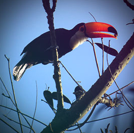
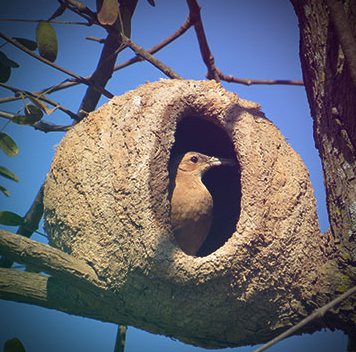
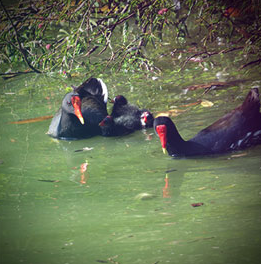

Zoológico de Guarulhos
A arara vermelha (Ara chloropterus) ocorre em grande parte do Brasil,
ocupando a região da Amazônia e os rios costeiros margeados por florestas,
chegando até o Espírito Santo, Rio de Janeiro e interior do Paraná. Pode ser
encontrada também no norte da Colômbia, planícies venezuelanas, Bolívia
e norte da Argentina. Pertence à classe das aves, ordem Psittaciformes e
família Psittacidae. É um dos maiores psitacídeos brasileiros, com cerca de 90
centímetros. Sua face é cortada por fileiras de penas vermelhas; na cabeça, nas costas
e na barriga possui coloração também avermelhada, com uma faixa verde. Costumam
andar em bandos ou em pares.

A anta-brasileira ou simplesmente anta, também conhecida por tapir,
é um mamífero perissodáctilo da família dos tapirídeos e gênero tapirus.
Ocorre desde o sul da Venezuela até o norte da Argentina, em áreas aberas ou
florestas próximas a cursos d'água, com abundância de palmeiras.


O Leão é uma espécie de mamífero carnívoro do genêro Panthera e da família Felidae.
A espécie é atualmente encontrada na África subsaariana e na Ásia,com uma única
população remanescente em perigo, no Parque Nacional da Floresta de Gir, Gujarat,
Índia. A maior parte dos leões que hoje vive na natureza são encontrados nas savanas
da África e demais regiões semi-desérticas. Ele já foi extinto de muitas áreas de florestas
da Ásia e Europa.
Eles vivem em grupos de até 40 indivíduos, sendo em sua maioria fêmeas,
lideradas pelo macho alfa.

O mico-leão-dourado (nome científico: Leontopithecus rosalia) é
um primata endêmico do Brasil, da família Callitrichidae e gênero
Leontopithecus. Ocorre exclusivamente na Mata Atlântica brasileira,
no estado do Rio de Janeiro, mas alguns autores já consideraram sua
ocorrência no sul do Espírito Santo. Atualmente, são encontrados
principalmente na Reserva Biológica Poço das Antas e na Reserva
Biológica União, e vivem nos estratos mais altos da floresta. Podem ser
encontrados em trechos de floresta secundária. Já foi considerado como uma
subespécie, hoje é uma espécie propriamente dita, como as outras espécies de
micos-leões. Evidências de estudos filogenéticos mostram que o mico-leão-preto é a espécie
mais próxima do mico-leão-dourado. Não existem fósseis conhecidos da espécie.

Os tucanos são aves que correspondem à família Ramphastidae, vivem nas florestas
Os tucanos são aves que correspondem à família Ramphastidae, vivem nas florestas
tropicais da América Central e América do Sul. A família inclui cinco gêneros e mais de
quarenta espécies diferentes. Possuem bicos notavelmente grandes e coloridos, que
possuem a função de termorregulação para as muitas espécies que passam muito tempo na
copa da floresta exposta ao sol tropical quente.[1]
.São aves arborícolas restritas aos
neotrópicos, sendo encontradas desde o México até o Brasil. Algumas espécies habitam
florestas tropicais úmidas de baixa altitude, enquanto outras habitam bosques mais temperados,
em cordilheiras, a altitudes de até 3000 m.

Conhecido também como barreiro, joão-barreiro (Rio Grande do Sul),
Conhecido também como barreiro, joão-barreiro (Rio Grande do Sul),
maria-barreira (Bahia), forneiro, pedreiro, oleiro, hornero (Argentina)
e amassa-barro. A fêmea é conhecida como “joaninha-de-barro”,
“maria-de-barro” ou “sabiazinho” em certas regiões. É conhecido por seu
característico ninho de barro em forma de forno. O joão-de-barro é tido
como passarinho trabalhador e inteligente. Seu canto parece uma gargalhada
(no Sul dizem que, quando ele canta, é sinal de bom tempo) e também dizem
que ele faz o ninho na direção contrária à da chuva, e é amigo de todos, lutando
para salvar seu ninho.
Dentre as várias canções populares sobre o João-de-barro,
uma se destacou nas vozes de Tonico e Tinoco, relatando umas das crendices populares sobre o pássaro.

Pato é o nome comum dado a algumas espécies de aves da família